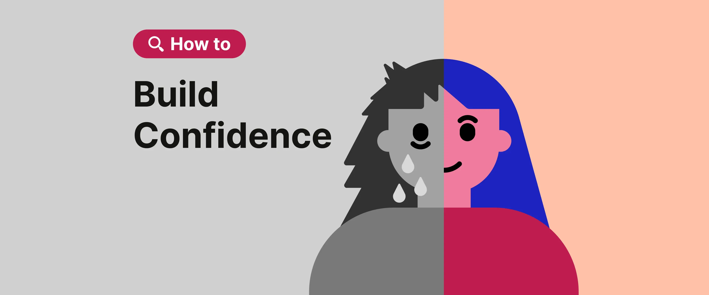

Confidence is all about believing in yourself and trusting that you can do what you want to do.
Confidence is a skill that we develop over time and with practice.
To grow our confidence, we must step outside of our comfort zones.
Even small steps can help us become stronger, more confident, and more ready to try new things.

Remember
Building confidence does not happen all at once. It grows when we keep trying, learning, and giving ourselves a chance.